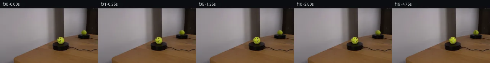

![首帧]()

Round 00
2026-11-05T03:49:16.053101+00:00像素候选变化代码 +243/−0inspection 更新
pixels d59534e3957454ea · code 4accb3a0a74748f5
查看本轮 generate.py 真实 diff
--- previous/generate.py +++ current/generate.py @@ -0,0 +1,243 @@ +#!/usr/bin/env python3 +"""Generate the 20-frame locked-camera tennis-ball rotation. + +Only first_frame.png is used as scene imagery. The photographed frame is kept +as the background; a small extracted ink residual is transported on an +analytic sphere, with a second view of the same longitude rendered in the +mirror. +""" + +from pathlib import Path +import hashlib +import math + +import cv2 +import numpy as np +from PIL import Image, ImageDraw + +from artifact_io import save + + +ROOT = Path(__file__).resolve().parent +SOURCE_PATH = ROOT / "first_frame.png" + +W, H = 256, 144 +N_FRAMES = 20 + +# Measured ellipses in the source photograph. +MAIN = (158.35, 83.65, 9.55, 9.05) # cx, cy, rx, ry +REFL = (219.35, 63.00, 7.45, 5.35) + + +def face_removal_mask() -> np.ndarray: + """Mask only the photographed eyes and mouth, at 4x then downsampled.""" + scale = 4 + hi = np.zeros((H * scale, W * scale), np.uint8) + + def ellipse(center, axes): + c = tuple(int(round(v * scale)) for v in center) + a = tuple(int(round(v * scale)) for v in axes) + cv2.ellipse(hi, c, a, 0, 0, 360, 255, -1, cv2.LINE_AA) + + # Eye positions were measured from the two compact dark components. + ellipse((153.35, 78.85), (1.55, 2.05)) + ellipse((157.35, 78.95), (1.45, 2.05)) + + # The photographed mouth is a low-resolution smile arc. A thick Bezier- + # like polyline follows its ink while leaving most ball texture untouched. + mouth = np.array( + [[153.5, 84.1], [154.2, 85.6], [155.7, 86.9], + [157.2, 86.8], [158.6, 85.7], [159.1, 84.2]], + dtype=np.float32, + ) + pts = np.round(mouth * scale).astype(np.int32).reshape((-1, 1, 2)) + cv2.polylines(hi, [pts], False, 255, thickness=5, lineType=cv2.LINE_AA) + + # A one-pixel-safe binary mask is appropriate for Telea inpainting. + lo = cv2.resize(hi, (W, H), interpolation=cv2.INTER_AREA) + return (lo > 24).astype(np.uint8) * 255 + + +def sphere_source_maps( + cx_out: float, + cy_out: float, + rx_out: float, + ry_out: float, + angle: float, + view_offset: float = 0.0, +): + """Map output pixels on an ellipse to the front-view source texture. + + The rotation is about the vertical axis. Positive angle carries the + photographed face toward image right. Points on the hidden hemisphere are + invalidated rather than wrapped, because the source image contains only + the original front-facing texture. + """ + yy, xx = np.mgrid[0:H, 0:W].astype(np.float32) + xn = (xx - cx_out) / rx_out + yn = (yy - cy_out) / ry_out + r2 = xn * xn + yn * yn + visible = r2 < 0.985 + z = np.sqrt(np.maximum(0.0, 1.0 - r2)) + lon_view = np.arctan2(xn, z) + lon_texture = lon_view - angle - view_offset + # The acquired texture only exists on its original visible hemisphere. + acquired = np.abs(lon_texture) < (math.pi / 2 - 0.015) + valid = visible & acquired + … diff truncated; 156 more lines …